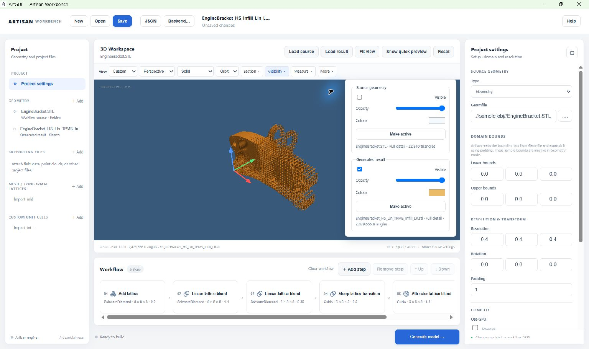

Inspect models in the 3D Workspace#
The viewer loads mesh files for inspection. Camera, display, section and measurement controls do not change the workflow geometry or the mesh on disk. After changing workflow parameters, generate and reload a result to see the new design.
Move around the model#
Use Orbit, Pan or Zoom in the navigation selector to assign that action to the left mouse button. The middle button zooms. More → Mouse controls contains right-button preferences, sensitivity and reverse-scroll zoom. Touch navigation uses one finger to orbit and two to pan/zoom.
Choose Fit view to frame the visible layers or Reset for an isometric camera. The View selector provides front, back, left, right, top, bottom and isometric views. You can also click a face, edge or corner of the orientation cube. Z is the vertical axis.
Switch between Perspective and Orthographic projection as needed. The display selector offers Solid, Wireframe and Solid + edges. Dense triangle edges may obscure small features; return to Solid for a clear surface view.
Compare source and result#
Load source updates the workflow source; Load result adds a result layer. Use Geometry → + Add for other reference meshes. All layers retain their original coordinate positions so aligned inputs and outputs can be compared.
Open Visibility to show or hide layers and change their colour and opacity. Use Make active to choose the layer affected by the preview-detail switch. For a lattice infill, hide the solid source first; otherwise it may cover the structure you are trying to inspect.


Hide the source to inspect an infill result. Each layer has independent visibility, opacity and colour controls.#
Transparency is useful for an overlay, but complex intersecting surfaces can show sorting artefacts. Inspect each layer separately if an overlap is unclear.
Quick Preview and Full Detail#
Large STL files open using a sampled Quick Preview of up to 120,000 triangles. This reduces loading and display cost. Sampling can make surfaces look incomplete because many triangles are intentionally omitted.
Select the layer in Visibility and choose Load full detail to load its complete mesh. The control may show Show quick preview afterwards, or Full detail shown for a mesh that does not need sampling. Read the footer below the viewport to confirm the active layer and displayed detail.
Important
Quick Preview is a display aid. It does not simplify the original file or reduce the geometry used by Artisan. Measurements are disabled on sampled previews. Use Full Detail before assessing holes or missing surfaces.
Full-detail STL loading warns for files larger than 256 MB and has a 10-million-triangle limit in this version. Large text meshes can take longer to parse. Use Cancel beside the loading progress indicator to stop loading.
Look inside with a section plane#
Open Section and enable the section display.
Choose X, Y or Z, or enter a custom plane normal.
Move the position slider through the model.
Reverse the visible side if needed. Disable the section to restore the complete view.
This clips the display only. It does not create a capped cross-section, modify the STL, or export a cut model. On solid INP meshes, it clips the visible outer boundary; it does not reveal every internal element face.
Measure a distance or angle#
Load Full Detail for the model you want to measure and make it visible.
Open Measure, choose that model, and select Distance — 2 points or Angle — 3 points.
Click two points for a distance. For an angle, click three points with the vertex as the second point.
Enable Snap to triangle vertices when you want measurements based on nearby mesh vertices. INP beam measurements can snap to endpoints.
Return the measurement tool to Off when finished.
Measurements describe the loaded mesh and its floating-point precision. They do not measure the underlying implicit field or an exact CAD surface. Picking may be slower on very large meshes. Annotations are session-only and are cleared when their model is replaced.
Note
Mesh coordinates do not carry a guaranteed unit system. More → Unit label changes the displayed label, not the model scale. If the file was created in millimetres, use mm; selecting inches does not convert it.
Save a view or an image#
More contains grid, axes, bounding box/dimensions, background colour, unit labels, named camera views and image export.
Named camera views retain position, target, projection and zoom. Camera views and viewer preferences are remembered locally, separately from the workflow JSON. They are not transferred just by sharing the project file.
To save an illustration, frame the model, choose whether to include dimensions and measurements, and choose More → Save PNG…. You can request an opaque or transparent background. The image uses the current viewport resolution; enlarge the window before saving when you need more pixels.
Supported meshes#
The viewer supports binary and ASCII STL, OBJ, ASCII PLY and the supported INP subset described below. A file accepted by the viewer is not necessarily a valid input to every Artisan operation.
For INP, use a flat Abaqus/meshio-style file containing explicit *NODE
and *ELEMENT records in Cartesian coordinates. Common linear beam/truss,
triangle, quadrilateral, tetrahedral, wedge and hexahedral elements are
supported. Beams appear as centre lines without physical section thickness;
shells appear as surfaces; solid meshes display the outer boundary with
shared interior faces removed.
Wireframe and Solid + edges show INP element boundaries rather than the extra diagonals used to draw quadrilaterals. Axisymmetric elements are displayed in their supplied coordinates, without revolving them into a three-dimensional body.
The INP reader does not support higher-order elements, part/assembly instances, include files, generated node/element definitions or unsupported coordinate systems. Export a flat, supported mesh before viewing those models.
INP limits are 128 MB per file, 500,000 nodes, 500,000 elements and 2 million processed faces. Loading is cancellable; there is no sampled INP Quick Preview. The viewer does not provide mesh editing, a solver or analysis-result plotting.